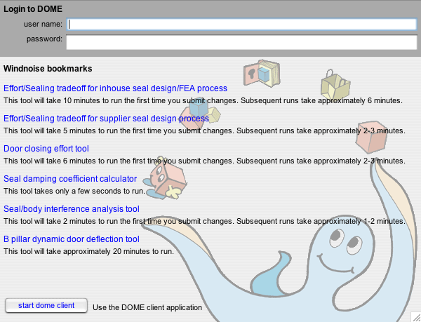

|
DOME Web
Portal Example Type your username and password below. Click on blue links to open models directly. Use the start dome client button if you would like work within the DOME client application. DOME help is available within the client. |
|  |